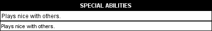

This page is broken into two sections.
Tag Name: ABILITY:x|y|z|z
Variables Used (x): Text (Ability category)
Variables Used (y): Text (Ability nature)
Variables Used (z): Text (Ability name or key)
Variables Used (z): TYPE=Text (Ability type)
Variables Used (z): .CLEAR
Variables Used (z): .CLEAR.Text (Ability name or key)
What it does:
CHOOSE
tag,
%LIST
can be used with this tag to provide the
required choice.
%LIST
parameter. ABILITY tags qualified with PRExxx
tags will not be added unless the character meets the
prerequisites.
.CLEAR
tag, read
the
.CLEAR
docs.
Note: This tag WILL NOT activate a CHOOSER inside of a feat. You must use ADD:FEAT to activate a chooser inside of a feat being granted.
Examples:
ABILITY:FEAT|AUTOMATIC|Empower
Spell
Adds the empower spell feat as an Auto feat.
ABILITY:FEAT|AUTOMATIC|TYPE=SpecialFu
Adds all feats with SpecialFu Type.
ABILITY:Special Ability|AUTOMATIC|Monkey
Fu Mastery
Adds the Monkey Fu Mastery 'Special Ability' and lists it as Automatic nature (if visible).
ABILITY:CLASSFEATURE|VIRTUAL|Stunning
Fist
Adds the Stunning Fist ability as a virtual class feature.
CHOOSE:WEAPONPROFS|LIST <tab>
ABILITY:FEAT|AUTOMATIC|Weapon Focus (%LIST)
The feat "Weapon Focus" is granted as an
automatic feat with the weapon chosen with the
CHOOSE
tag.
ABILITY:FEAT|AUTOMATIC|.CLEAR
Clears all automatic feats from the character.
ABILITY:FEAT|VIRTUAL|.CLEAR.Empower
Spell
Clears the empower spell feat as an virtual feat.
ABILITY:FEAT|AUTOMATIC|Toughness|Track
Example of granting more than one feat. This grants 'Track' and 'Toughness' as automatic feats
ABILITY:Special Ability|AUTOMATIC|Wild
Shape(Small Animal)|Wild Shape(Medium
Animal)|PREVARGTEQ:DruidWildShape,4
Grants the Special Ability 'Wild Shape (Small Animal)' and 'Wild Shape (Medium Animal' as an automatic ability once the variable 'DruidWildShape' equals or is greater than '4'
ABILITY:Special Ability|AUTOMATIC|Wild
Shape(Small Animal,Medium
Animal)|PREVARGTEQ:DruidWildShape,4
This shows an example of Abilities with sub-choices being granted in a shorthand manner. Same as the above and grants the Special Ability 'Wild Shape (Small Animal)' and 'Wild Shape (Medium Animal)' as an automatic ability. Note: The Comma delimiter.
ABILITY:Special Ability|AUTOMATIC|%LIST
<tab> CHOOSE:ABILITYSELECTION|Special
Ability|TYPE=CuteBunnies <tab> MULT:YES
Would grant automatically, a Choice of type "CuteBunnies".
Tag Name: AUTO:ARMORPROF|x|x
Variables Used (x): Text (Armor name)
Variables Used (x): ARMORTYPE=Text (Armor type)
What it does:
ARMORTYPE=
sub-tag you may use
a period-delimted (.) list of armor types. This will grant the
character proficiency with armor that meet all of the listed armor
types.
Examples:
AUTO:ARMORPROF|ARMORTYPE=Light
All Light armors are given as free armor proficiencies.
AUTO:ARMORPROF|Leather
Leather armor is given as a free armor proficiency.
AUTO:ARMORPROF|ARMORTYPE=Light|ARMORTYPE=Medium
Light and Medium Armor is given as a free armor proficiency.
AUTO:ARMORPROF|Dwarven
Plate|PRERACE:1,Dwarf
Dwarven Plate is given as a free armor proficiency if the character is a Dwarf.
Tag Name: AUTO:EQUIP|x|x
Variables Used (x): Text (<Equipment Name>)
What it does:
AUTO:EQUIP
won't take (%)LIST or (%)CHOICE for
substitution.
Where it is used:
Global, however AUTO:EQUIP is not supported in class level lines. It can be used on a class line.
Examples:
AUTO:EQUIP|Flurry of
Blows|PRECLASS:1,Monk=1|
The item "Flurry of Blows" is granted as a free equipment item if the character has a level of Monk.
AUTO:EQUIP|Flurry of
Blows|PREMULT:2,[PRESTAT:1,DEX=15],[PRECLASS:1,Monk=1]
The item "Flurry of Blows" is granted as a free equipment item if the character has a level of Monk and a DEX score of 15 or better.
AUTO:FEAT
is deprecated. Use
ABILITY:FEAT|AUTOMATIC|
instead.
FEAT
tags have been
deprecated
and replaced by the
ABILITY
system, which is more general. The
ABILITY
system can model feats, racial features, class
features, traits, flaws, temporary bonuses, and so on, all using a
common format.
*** Updated 5.17.4
Tag Name: AUTO:FEAT|x|x
Variables Used (x): Text (Feat name)
What it does:
CHOOSE
tag,
%LIST
can be used with this tag to provide the
required choice.
Note: This tag WILL NOT activate a CHOOSER inside of a feat. You must use ADD:FEAT to activate a chooser inside of a feat being granted.
Examples:
AUTO:FEAT|Dodge|PRESTAT:1,DEX=13
The feat "Dodge" is granted as an automatic feat if the character's dexterity is 13 or higher.
CHOOSE:WEAPONPROFICIENCY|LIST <tab>
AUTO:FEAT|Weapon Focus (%LIST)
The feat "Weapon Focus" is granted as an
automatic feat with the weapon chosen with the
CHOOSE
tag.
AUTO:FEAT|.CLEAR.Dodge <tab>
AUTO:FEAT|Alertness
The feat "Dodge" is cleared and the feat "Alertness" is granted as an automatic feat.
Tag Name: AUTO:LANG|x|x
Variables Used (x): Text (Language)
Variables Used (x): TYPE=Text (Language type)
Variables Used (x): !TYPE=Text (Language type)
Variables Used (x): ALL
Variables Used (x): %LIST
Variables Used (x): .CLEAR
What it does:
TYPE=
sub-tag you may use a
period-delimited (.) list of language types. This will grant the
character any Language with the listed types.
%LIST
will insert the result of a
CHOOSE
tag.
.CLEAR
will clear all languages granted by
previous
AUTO:LANG
tags.
Examples:
AUTO:LANG|Common
Common is granted as a free language to the character.
AUTO:LANG|TYPE=Latin
Latin-type Languages are given as free languages .
AUTO:LANG|Draconic|PREFEAT:1,Dodge
The Draconic language is granted as a free language if the character has the Dodge feat.
Tag Name: AUTO:SHIELDPROF|x|x
Variables Used (x): Text (Shield name)
Variables Used (x): SHIELDTYPE=Text (Shield type)
What it does:
SHIELDTYPE=
sub-tag you may use
a period-delimted (.) list of shield types. This will grant the
character proficiency with shields that meet all of the listed
shield types.
Examples:
AUTO:SHIELDPROF|SHIELDTYPE=Buckler
Buckler shield is given as a free shield proficiency.
AUTO:SHIELDPROF|SHIELDTYPE=Buckler|SHIELDTYPE=Light|SHIELDTYPE=Heavy
Buckler, Light, and Heavy Shields are given as free shield proficiencies.
Tag Name: AUTO:WEAPONPROF|x|x
Variables Used (x): Text (Weapon name)
Variables Used (x): TYPE=Text (Weapon Type)
Variables Used (x): TYPE.Text (Weapon Type)
Variables Used (x): DEITYWEAPONS (Deity's favored weapon)
What it does:
TYPE=Text
or
TYPE,Text
sub-tag you may use a period-delimted (.)
list of weapon types. This will grant the character proficiency
with weapons that meet all of the listed weapon types.
DEITYWEAPONS
sub-tag, all of the
deity's favored weapons, except for natural weapons, are added. If
the deity specifies "ALL" or "ANY" for its favored weapon, no
weapons will be added.
Examples:
AUTO:WEAPONPROF|Longsword|Shortbow
(Composite)
The "Longsword" and "Shortbow (Composite)" are given as free weapon proficiencies.
AUTO:WEAPONPROF|TYPE.Simple
All "Simple" weapons are given as free weapon proficiencies.
AUTO:WEAPONPROF|TYPE.Simple|TYPE.Martial
All "Simple" and "Martial" weapons are given as free weapon proficiencies.
AUTO:WEAPONPROF|TYPE.Ranged|TYPE.Piercing|TYPE.Simple
All "Ranged", "Piercing" and "Simple" weapons are given as free weapon proficiencies.
AUTO:WEAPONPROF|TYPE.Martial.Slashing
All "Martial" weapons that are "Slashing" type are given as free weapon proficiencies.
AUTO:WEAPONPROF|TYPE.Martial.Slashing.Melee
All "Melee" type "Martial" weapons that are "Slashing" type are given as free weapon proficiencies.
AUTO:WEAPONPROF|DEITYWEAPONS
All favored weapons of the character's deity are given as free weapon proficiencies.
AUTO:WEAPONPROF|TYPE=NoProfReq|Longspear|Javelin
All "NoProfReq" and "Longspear" and "Javelin" weapons are given as free weapon proficiencies.
CLASS:Rogue.MOD <tab>
AUTO:WEAPONPROF|Gladius
Modified the Rogue Class to include the Gladius weapon.
Tag Name: CSKILL:x|x
Variables Used (x): Text (<Skill Name>)
Variables Used (x): Text (Type=<Skill Type>)
Variables Used (x): ALL
Variables Used (x): LIST
Variables Used (x): .CLEAR
Variables Used (x): .CLEAR.Text
What it does:
Examples:
CSKILL:Listen|Spot
The "Listen" and "Spot" skills are made class skills.
CSKILL:Search|TYPE.Knowledge
The "Search" and "Knowledge" type skills are made class skills.
CSKILL:ALL
All skills are made class skills.
CSKILL:LIST
Skills selected in the associated choice are made class skills. (In Abilities and Feats)
CLASS:Sorcerer.MOD <tab>
CSKILL:.CLEAR.Scry <tab>
CSKILL:Drive|TYPE.Knowledge|Perform
Modifies the Class Sorcerer, droping the class skill "Scry" and adding "Drive, Perform and all TYPE.Knowledge" skills.
CLASS:Blackguard.MOD <tab>
CSKILL:.CLEAR <tab>
CSKILL:Concentration|TYPE.Craft|Diplomacy|Heal|Intimidate|Knowledge
(Religion)|TYPE.Profession|Climb|Jump|Listen|Spot|Swim|Pilot
Modified Class that removes all class skills in the object previously, then adds in the specific list.
CLASS:Blackguard.MOD <tab>
CSKILL:.CLEAR.Handle Animal|.CLEAR.Ride|Heal <tab>
CSKILL:Pilot
Modified Class that removes only Handle Animal and Ride from the original class skill list, and then adds Heal and Pilot.
Tag Name: CCSKILL:x|x
Variables Used (x): Text (<Skill Name>)
Variables Used (x): Text (Type.<Skill Type>)
Variables Used (x): LIST
What it does:
Grants the listed exclusive skills as cross-class skills.
Examples:
CCSKILL:Listen|Spot
The "Listen" and "Spot" skills are made cross-class skills.
CCSKILL:Search|TYPE.Knowledge
The "Search" and "Knowledge" type skills are made cross-class skills.
CCSKILL:LIST
Skills selected in the associated choice are made cross-class skills.
CLASS:Blackguard.MOD <tab>
STARTSKILLPTS:2 <tab> CSKILL:.CLEAR|Handle Animal|Ride
<tab>
CSKILL:Concentration|TYPE.Craft|Diplomacy|Heal|Intimidate|Knowledge
(Religion)|TYPE.Profession|Climb|Jump|Listen|Spot|Swim|Pilot
<tab> CCSKILL:Handle Animal|Ride
Modified Class that changes all of these Tags from their starting values..
Tag Name: CHANGEPROF:x,x=y|x,x=y
Variables Used (x): Text (Name of weapon)
Variables Used (x): TYPE.Text (weapon type)
Variables Used (y): Text (Category of Proficiency to change to)
What it does:
Examples:
CHANGEPROF:Urgrosh (Dwarven),Waraxe
(Dwarven)=Martial
Changes the above weapons to be Martial weapons for proficiency purposes.
CHANGEPROF:TYPE.Hammer=Simple
Changes all weapons of TYPE Hammer to be Simple weapons for proficiency purposes.
Tag Name: COMPANIONLIST:x|y,y|z
Variables used (x): Text (Companion Type)
Variables used (y): Text (Companion Race)
Variables used (y): RACETYPE=Text (Companion Race Type)
Variables used (y): RACESUBTYPE=Text (Companion Race Subtype)
Variables used (y): ANY
Variables used (z): FOLLOWERADJUSTMENT:Number (Level Adjustment)
What it does:
COMPANIONLIST
tags, PRExxx tags are checked against
the master.
FOLLOWERADJUSTMENT
will modify the masters
effective level when determining the benefits gained from the
companion creature.
Example:
COMPANIONLIST:Familiar|Bat,Cat,Hawk,Lizard,Owl,Rat,Raven,Snake(Tiny/Viper),Toad,Weasel
Would build the list consisting of the Bat, Cat, Hawk, Lizard, Owl, Rat, Raven, Snake(Tiny/Viper), Toad, and Weasel and make them available to be familiars.
COMPANIONLIST:Pet|RACETYPE=Animal
Would build a list of all animals and make them available to be a Pet.
COMPANIONLIST:Pet|RACESUBTYPE=Fire
Would build a list of all creatures with a race subtype of 'Fire' and make them available to be a Pet.
COMPANIONLIST:Familiar|Quasit|PREFEAT:1,Special
Familiar|PREALIGN:CE
A Quasit can be chosen as a Familiar but only if the master is evil and has the Special Familiar feat.
COMPANIONLIST:Animal
Companion|Ape|FOLLOWERADJUSTMENT:-3
An Ape companion to a 4th level master gains the benefits normally granted to a companion of a 1st level master.
*** deprecated 6.01.03 - Remove for 6.4 - Use DEFINESTAT
Tag Name: DEFINE:LOCK.x|y
Variables Used (x): Ability Score (STR, DEX, CON, INT, CHA, WIS or other stat defined in the gameMode)
Variables Used (y): Number (Value stat is to be locked to)
What it does:
Locks the specified ability score to a specific value regardless of any other bonuses to that ability. If the locked value is 10 the OS will output an asterisk (*) instead of the number. This is commonly used when a creature has a non-ability such as the undead's lack of a constitution score.
Example:
DEFINE:LOCK.CON|10
Constitution is set to 10 and an asterisk is output.
Example Conversion to DEFINESTAT tag:
DEFINE:LOCK.CON|10
becomes
DEFINESTAT:LOCK|CON|10
*** deprecated 6.01.03 - Remove for 6.4 - Use DEFINESTAT
Tag Name: DEFINE:UNLOCK.x
Variables Used (x): Ability Score (STR, DEX, CON, INT, CHA, WIS or other stat defined in the gameMode)
What it does:
Unlocks a stat which has been locked by DEFINE:LOCK
This tag will always override DEFINE:LOCK
Example:
DEFINE:UNLOCK.CON
Constitution is unlocked.
Example Conversion to DEFINESTAT tag:
DEFINE:UNLOCK.CON
becomes
DEFINESTAT:UNLOCK|CON
Tag Name: DEFINESTAT:x|y|z
Variables Used (x): LOCK
Variables Used (x): UNLOCK
Variables Used (x): NONSTAT
Variables Used (x): STAT
Variables Used (x): MINVALUE
Variables Used (x): MAXVALUE
Variables Used (y): Text (Stat defined in loaded gameMode)
Variables Used (z): Number or Formula
What it does:
LOCK
will lock the designated ability score
(y) to the value (z) regardless of any other bonuses to that
ability score except for those applied by the
BONUS:LOCKEDSTAT
tag.
UNLOCK
will unlock the designated ability
score (y) that has previously been locked.
UNLOCK
sub-tag will not affect an ability
score that has been designated as a "nonstat". (see
NONSTAT
below).
NONSTAT
will change an ability score to a
non-stat, causing it to be shown as an asterisk (*) on output
sheets and prohibiting any bonuses from being applied.
STAT
will change an ability score that has
been previously designated as a nonstat back to a stat without
affecting its locked/unlocked state.
MINVALUE
defines the minimum value (z) for
the designated ability score (y).
MAXVALUE
defines the maximum value (z) for
the designated ability score (y).
Example:
DEFINESTAT:LOCK|INT|10
Locks the stat "Intelligence" to 10.
DEFINESTAT:UNLOCK|INT
Unlocks previously locked stat "Intelligence".
DEFINESTAT:NONSTAT|INT
Changes the ability score "Intelligence" to a non-stat, causing it to appear on the output sheet as an asterisk.
DEFINESTAT:STAT|INT
Changes the ability score "Intelligence" that has been previously changed to a non-stat back to a normal stat.
DEFINESTAT:MINVALUE|INT|3
The creature cannot have an "Intelligence" less than 3.
DEFINESTAT:MAXVALUE|INT|10
The creature cannot have an "Intelligence" more than 10.
Tag Name: DESC:x
Variables Used (x): Text (ability description)
Variables Used (x): Text (deity description)
Variables Used (x): Text (domain description)
Variables Used (x): Text (equipment description)
Variables Used (x): Text (feat description)
Variables Used (x): Text (spell description)
What it does:
DESC
tags provides a description appropriate
for the object it is attached to, i.e. ability, deity, domain,
equipment, feat, or spell.
DESC
tag.
DESC
tags per line are allowed with all
qualifying
DESC
tags being concatonated for output and
separated by spaces.
.CLEAR
will clear all
DESC
tags.
.CLEAR.(regular expression match)
will clear
specific instances.
DESC
tags now take variable substitution.
DESC
. For example, %1 will substitute the
first variable into that position in the
DESC
%CHOICE
- Will replace the first associated choice
in the object.
%FEAT
- Will substitute the descriptions of feats
within the object that match the associated preqrequisites.
%LIST
- Will substitute all choices comma
separated into that parameter.
%NAME
- The name of the object this
DESC
tag is in.
DESC:.CLEAR..*
, or clear all
exceptional abilities by doing
DESC:.CLEAR.\(Ex\)
, or
clear everything that's non-numeric with
DESC:.CLEAR.[A-Za-z]
.
Example:
DESC:This domain grants the turn code
monkey speech into english
The domain description.
DESC:This is a description of the
item.
Adds a description for the equipment.
DESC:This is sample text for the example
purposes
Adds feat description.
DESC:Kick Butt (level
3)|PRELEVEL:3
Adds feat description only if the PC is level 3 or higher.
DESC:Assembly ~ 1
table|PREVAREQ:AssemblyTables,1
DESC:Assembly ~ %1
tables|AssemblyTables|PREVARGTEQ:AssemblyTables,2
Adds a feat description which is dependent upon the value of the variable AssemblyTables.
DESC:You get a +2 bonus on all %1 saving
throws|%CHOICE
Adds feat description and replaces %1 with the first choice made.
DESC:Bardic Music %1/day
(%2)|BardicMusicTimes|%FEAT=TYPE.BardicMusic
The variable "BardicMusicTimes" is substituted for "%1" and the text from the "DESC" tags in all granted feats with type "BardicMusic" are concatenated and substituted for "%2".
DESC:You get a +3 bonus on all checks
involving %1|%LIST.
Adds feat description replaces %LIST with all choices made.
DESC:%3 Sneak Attacks per day for +%1d%2
damage|SneakAttack|SneakAttackDie|SneakAttackTimes
Adds feat description substituting the variables from the positions specified.
Advanced Combat Martial Arts.MOD
<tab> DESC:.CLEAR <tab> DESC:When the character scores
a critical hit on an opponent with an unarmed strike, the character
deals triple damage
Changes the feat description, substituting the specified.
DESC:Toasts the monsters with
fire
What the spell does.
DESC:Target is prone for (CASTERLEVEL)
rounds.
If the value of CASTERLEVEL is equal to 3 then this would output: "Target is prone for 3 rounds.".
Maximize Power.MOD <tab> DESC:.CLEAR
<tab> DESC:You can manifest powers to maximum
effect.
Replaces the standard spell DESC with the attached.
Tag Name: DESCISPI:x
Variables Used (x): BOOLEAN (YES or NO)
What it does:
YES means it will bold and italicize the description of an item in the info boxes in PCGen, to indicate that the name of the item is Product Identity. This is only visible in the Domain, Feats, and Spells tabs since no other objects display a description. Default is NO.
Example:
DESCISPI:YES
It will bold and italicize the description of an item in the info boxes in PCGen, to indicate that the name of the item is Product Identity.
Tag Name: DR:x/y
Variables Used (x): Number or Formula (Amount of Damage Reduction)
Variables Used (y): Text (Damage Type that bypasses this Reduction)
Prerequisites Allowed: Yes
What it does:
Example:
DR:10/+1
Grants DR of 10/+1 on output.
DR:2/-|PRESTAT:1,CON=18
Grants DR of 2/- if the character has a constitution of 18 or higher.
Tag Name: FOLLOWERS:x|y
Variables Used (x): Text (The type of companion the limit will apply to).
Variables Used (x): Number, variable or formula (Number of this type of companion the master can have)
What it does:
Limits the number of the specified type of companion the master can have.
Optional, if this tag is not present no limits are placed on the number of companions the character can have.
If more than one tag is encountered the highest value is used.
The value can be adjusted with the BONUS:FOLLOWERS tag.
Where it is used:
Global tag, would most often be used in class and feat (ability) files, should also be enabled for templates and Domains.
Examples:
FOLLOWERS:Familiar|1
A character is allowed only 1 companion of type Familiar.
Tag Name: KIT:x|y|y
Variables Used (x): Number (number of options user may select).
Variables Used (y): Text (Name of kit).
What it does:
Offers a choice of starting kits.
Examples:
KIT:1|Wizard1|Illusionist1
Offers a choice of the Wizard1 or Illusionist1 starting kits.
Tag Name: MOVE:x,y,x,y
Variables Used (x): Text (Movement Mode)
Variables Used (y): Number (Rate per round)
What it does:
Determines the Type and Speed of the different movement types the race has.
Example:
MOVE:Walk,30,Fly,10
This would grant a walking speed of 30 ft per round and a flying speed of 10 feet per round
Where it can be used:
This can be used anywhere except Equipment
and Equipment Mod files.
Tag Name: MOVECLONE:x,y,z
Variables Used (x): Text (1st movement mode)
Variables Used (y): Text (2nd movement mode)
Variables Used (z): Formula (Calculation for 2nd mode movement rate)
What it does:
Examples:
MOVECLONE:Walk,Fly,*2
Create the "Fly" movement type and set it equal to "Walk" multiplied by 2.
MOVECLONE:Walk,Tunnel,/3
Create "Tunnel" movement type and set it equal to 1/3 of the "Walk" movement rate.
Variables Used (x): BOOLEAN (YES or NO)
What it does:
"YES" means it will bold the item in the program, to indicate that the name of the item is the Product Identity. The Default is "NO".
Example:
NAMEISPI:YES
The name is the Product Identity
Tag Name: NATURALATTACKS:v,w.w,x,y,z|v,w.w,x,y,z
Variables Used (v): Text (Natural weapon name)
Variables Used (w): Text (Natural weapon type)
Variables Used (x): Number (Number of attacks)
Variables Used (y): Text (Natural weapon damage)
Variables Used (z): SPROP=Text (special property description, Optional)
What it does:
NATURALATTACKS
tag, the first is treated as a primary
weapon and the second is treated as a secondary attack.
NATURALATTACKS
tag creates a proficiency for
the attacks on the fly which allows the use of the
BONUS:WEAPONPROF
tag to effect it. For example, if you
used the
NATURALATTACKS
tag to create a Bite attack
you could then use
BONUS:WEAPONPROF=Bite|DAMAGE,TOHIT|2
to add 2 to the
attack and damage rolls.
Example:
NATURALATTACKS:Claw,Weapon.Natural.Melee.Piercing.Slashing,*2,1d4|Bite,Weapon.Natural.Melee.Bludgeoning.Piercing.Slashing,*1,1d6
Race has 2 Claw attacks and a Bite attack.
NATURALATTACKS:Slam,Weapon.Natural.Melee.Bludgeoning,*1,2d4,SPROP=plus 1d4 acid and grab
Race has a single slam attack that has the extra information that it does 1d4 acid and grab.
Where it is Used:
Ability, Feat, Race, and Template files.
Tag Name: OUTPUTNAME:x
Variables Used (x): Text (Name to appear on the output sheet)
Variables Used (x): [NAME] (This is replaced by anything in parenthesis on output)
What it does:
[NAME]
tag, when used, will be replaced by the
parenthetical text in the object's name.
[NAME]
tag is used where there is no
parenthetical text the object name itself is output.
Example:
OUTPUTNAME:Jason's [NAME]
LST entry "Magic Spell" will output as "Jason's Magic Spell"
OUTPUTNAME:[NAME] Elf
LST entry "Elf (Gray)" will output as "Gray Elf".
OUTPUTNAME:Huge Water Elemental
LST entry "Elemental (Water/Huge)" will output as "Huge Water Elemental".
OUTPUTNAME:Formian [NAME]
LST entry "Formian (Queen)" will output as "Formian Queen".
OUTPUTNAME:Potion of [NAME]
LST entry "Potion (Glibness)" will output as "Potion of Glibness".
Clenched Fist.MOD <tab>
OUTPUTNAME:Big [NAME]
This spell will output as "Big Clenched Fist".
Tag Name: QUALIFY:x|y|y
Variables Used (x): ABILITY=Text (Ability category)
Variables Used (x): CLASS
Variables Used (x): DEITY
Variables Used (x): DOMAIN
Variables Used (x): EQUIPMENT
Variables Used (x): EQMOD
Variables Used (x): FEAT
Variables Used (x): RACE
Variables Used (x): SPELL
Variables Used (x): SKILL
Variables Used (x): TEMPLATE
Variables Used (x): WEAPONPROF
Variables Used (y): Text (Object KEY)
What it does:
Counters PRExxx tags checking for the listed objects. Any objects listed will ignore all PRE tags and be a valid selection for the character.
Example:
QUALIFY:ABILITY=FEAT|Mounted
Combat|Ride-By Attack
The character would be able to take the above feats whether they meet the prereqs or not.
QUALIFY:FEAT|Mounted Combat|Ride-By
Attack
The character would be able to take the above feats whether they meet the prereqs or not.
QUALIFY:CLASS|Monk
The character would be able to take the Monk class whether they meet the prereqs or not.
QUALIFY:CLASS|Battle
Mind|Telepath
The character would be able to take either the Battle Mind or Telepath class whether they meet the prereqs or not.
Where it is used:
Valid in most objects except .pcc files and class level lines.
Tag Name: REGION:x|y|y
Variables Used (x): Number (Number of selections to allow)
Variables Used (y): Text (Region name)
What it does:
Example:
REGION:1|Region1|Region2|Region3
Will allow the choice of Region1, Region2, or Region3 as the character's region.
REGION:1|Timbuktu
The PC is from the "Timbuktu" region.
FEAT
tags have been
deprecated
and replaced by the
ABILITY
system, which is more general. The
ABILITY
system can model feats, racial features, class
features, traits, flaws, temporary bonuses, and so on, all using a
common format.
*** New 5.11.13
Tag Name: REMOVE:FEAT|x|y,y
Variables Used (x): Number (Number of feats, Optional)
Variables Used (x): ALL
Variables Used (y): Text (Name of feat)
Variables Used (y): TYPE.Text (Feat type)
Variables Used (y): CLASS.Text (Feat class type)
Variables Used (y): CHOICE (Presents a chooser dialog box)
What it does:
ALL
is used for (x), all indicated feats are
removed without prompting.
Example:
REMOVE:FEAT|Alertness
Removes the Alertness feat, no choice is presented, the feat is simply removed.
REMOVE:FEAT|TYPE.Fighter
Presents a list of Fighter type feats and allows the removal of up to 3.
REMOVE:FEAT|2|CHOICE
Presents a list of all feats the character has and allows the removal of 2 of them. If a feat has a cost associated with it, it returns that cost to the feat pool.
REMOVE:FEAT|ALL|CLASS.Paladin
Removes all feats that have been granted/taken by the Paladin Class.
Where it can be used:
Works in Ability, Class and Template files.
Displays a text string in the 'special abilities' section of the character sheet.
Tag Name: SAB:x
Variables Used (x): Text (Special Ability Name)
Variables Used (x): .CLEAR
Variables Used (x): .CLEAR.Text (Special Ability Name)
%
tag will fill in a number from a variable
listed after a pipe
|
.
%
relating to the next variable listed after
another pipe
|
.
%#
, with each
successive numbered
%
relating to the next variable
listed after another pipe
|
. The count starts at zero
and counts up.
DEFINE
tag.)
SAB:.CLEAR
can be used in conjunction with the
.MOD
but does not support cross-level
interactions.
SAB:.CLEAR
will only clear a previous
SAB
in the same object (class, template, etc.). It
will not clear them across objects.
SAB:.CLEAR.Text
must include the exact text of the
Special Ability to be removed but only the exact text up to the
first open-parentheses. The
CLEAR
and Replace tags
should be at the end of the line, so the new and old tags are
not.
[PRExxx](globalfilesprexxx.html)
tags.
%CHOICE
tags to display
the result of a
CHOOSE
result.
SAB:Fire in the Hole
Grants the special ability "Fire in the Hole".
SAB:Sneak Attack +%d%|Sneak Attack|Sneak Attack
Die
If the PC's
Sneak Attack
variable had value
2
, and the PC's
Sneak Attack Die
variable
had value
6
, this would grant the special ability
Sneak Attack +2d6
.
SAB:.CLEAR.+1d6 to natural weapons →
SAB:+1d8 to natural weapons
Clears the "Natural Weapons" value and makes it +1d8 instead.
SAB:Banana toss|PRERACE:monkey
Grants the special ability "Banana toss" if the character's race is "monkey".
SAB:Banana toss via elemental power of (%CHOICE)
→ STACK:NO → MULT:YES
→ CHOOSE:Air|Earth|Fire|Water
Offers a Choice between the elemental powers of
Air
,
Earth
,
Fire
and
Water
for banana tossing. The same ability may be
taken multiple times, but a different element must be chosen each
time.
SAB:.CLEAR.Poison
Clears the
Poison
value and replaces it with
nothing.
Within a class definition in a Class file :
CLASS:Basketweaver
1 → SAB:Basket Toss
5 → SAB:.CLEAR.Basket Toss → SAB:Greater Basket Toss
Replaces the
Basket Toss
ability with the
Greater Basket Toss
ability at
Basketweaver
class level 5.
Within a class definition in a Class file :
CLASS:Basketweaver
1 → SAB:Basket Toss|PREVARLT:CL,5
5 → SAB:Greater Basket Toss
Another way of replacing the
Basket Toss
ability
with the
Greater Basket Toss
ability at
Basketweaver
class level 5.
The
SAB
tag has no effect on calculations. Its sole
purpose is to display a short ability description under the
Special Abilities
section of the character sheet. An example
for
SAB:Plays nice with others.
is shown below.

The
ASPECT
tag can be used to display similar
pieces of text in the other boxes,
Conditional Save
Modifiers
,
Conditional Combat Modifiers
, and
Conditional Skill Modifiers
.
ASPECT:CombatBonus|+2 to attack
and damage vs. elves.
ASPECT:SaveBonus|-2
penalty on saving throws vs. fear effects.
ASPECT:SkillBonus|+2 Competence
bonus on Climb checks when climbing trees.
Example code for an Ability list file:
My Ability Name
→ CATEGORY:Special Ability
→ ASPECT:CombatBonus|+2 to attack and damage vs. elves.
→ ASPECT:SaveBonus|-2 penalty on saving throws vs. fear effects.
→ ASPECT:SkillBonus|+2 Competence bonus on Climb checks when climbing trees.
Tag Name: SELECT:x
Variables Used (x): Number, Variable, or Formula (Number of choices)
What it does:
CHOOSE
tag
that does not already have an integrated number for "choices" to be
made.
CHOOSE:NOCHOICE
.
Example:
SELECT:3 <tab>
CHOOSE:SKILLS
Allows the selection of "3" skills selected from the list of skills currently held by the character.
SELECT:INT
Allows a number of choices equal to the Intelligence ability bonus.
Tag Name: SERVESAS:x|y|y
Variables Used (x): ABILITY=Text (Ability category including FEATS)
Variables Used (x): CLASS
Variables Used (x): RACE
Variables Used (x): SKILL
Variables Used (y): Text (Object name)
What it does:
Allows one object to imitate one or more objects, of the same type, to satisfy the requirements established by PRExxx tags.
Example:
Super
Foo<tab>SERVESAS:ABILITY=FEAT|Endurance|Diehard
Allows a character with the feat "Super Foo" to pass a prerequisite of "Endurance" or "Diehard".
Super Warrior <tab>
SERVESAS:CLASS|Warrior|Barbarian
Allows a character with class levels of "Super Warrior" to pass a prerequisite of class "Warrior" or "Barbarian".
Where is it Used:
Ability, Class, Feat, Race, and Skill files.
Tag Name: SORTKEY:x
Variables Used (x): Text (Alpha Numeric)
What it does:
Example:
Enlarge
Spell<tab>SORTKEY:Metamagic~Enlarge Spell
Quicken
Spell<tab>SORTKEY:11-MetaMagic~Quicken Spell
Early Feat<tab>SORTKEY:Z-Me
last
Would Display as
Quicken Spell
Enlarge Spell
Early Feat
Tag Name: SOURCELONG:x
Variables Used (x): Text (Long Source Name)
What it does:
SOURCExxx
tags, or on individual object lines.
SOURCELONG
tag will
be used by all objects which follow it.
SOURCELONG
tag on lines
which preceeded it.
Example:
SOURCELONG:Core Rulebook I (Foo
Handbook)
The long source name for this file is "Core Rulebook I (Foo Handbook)".
Tag Name: SOURCELINK:x
Variables Used (x): Text (Link to source website)
What it does:
Specifies the URL that points directly to a reference document with detailed information on the associated LST object. This tag is optional.
Example:
SOURCELINK:http://www.d20srd.org/srd/spells/aid.htm
Provides the following active URL: http://www.d20srd.org/srd/spells/aid.htm
SOURCELINK:http://paizo.com/prd/spells/aid.html
Provides the following active URL: http://paizo.com/prd/spells/aid.html
Tag Name: SOURCEPAGE:x
Variables Used (x): Number (Source Page Number)
What it does:
This is used to show where in the source is listed. SOURCEPAGE should always be used, since display of any of the SOURCE information requires its presence.
Example:
SOURCEPAGE:p.102
Further information can be found on page 102 of the source.
CLASS:Strong.MOD <tab> SOURCEPAGE:p.
28
Further information can be found on page 28 of the changed source.
Tag Name: SOURCESHORT:x
Variables Used (x): Text (Short Source Name)
What it does:
SOURCExxx
tags, or on individual object lines.
SOURCESHORT
tag will
be used by all objects which follow it.
SOURCESHORT
tag on lines
which preceeded it.
Example:
SOURCESHORT:FHB
The short source name for this file is "FHB".
Tag Name: SOURCEWEB:x
Variables Used (x): Text (Source Web Site)
What it does:
SOURCExxx
tags, or on individual object lines.
SOURCEWEB
tag will
be used by all objects which follow it.
SOURCEWEB
tag on lines
which preceeded it.
Example:
SOURCEWEB:http://www.foogames.com/product.php?products=654321
The web site for this source is "SOURCEWEB:http://www.foogames.com/product.php?products=654321".
Tag Name: SPELLKNOWN:CLASS|w=x|y|w=x|y|z|z
Variables Used (w): Text (Class Name)
Variables Used (w): SPELLCASTER.Text (Spellcaster Type)
Variables Used (x): Number (Spell Level)
Variables Used (y): Text (Spell List)
Variables Used (z): PRExxx tag
What it does:
Examples:
SPELLKNOWN:CLASS|Arawnite
Guardian=0|Create Water,Detect Magical Aura,Light,Mending,Read
Magic,Resistance,Virtue
This is the character's known spell's for the Arawnite Guardian class.
1 <tab> SPELLKNOWN:CLASS|Trundlefolk
Shaman=0|Create Water,Cure Minor Wounds,Detect
Magic,Guidance,Mending,Purify Food and Drink
This is the character's known spell's for the first level Trundlefolk Shaman class.
SPELLKNOWN:CLASS|SPELLCASTER.Psionic=7|Hypercognition
The Hypercognition power is added to the character's Psionic spallcasting classes.
SUBCLASSLEVEL:1 <tab>
SPELLKNOWN:CLASS|Holy Warrior=1|Bless,Bless Water,Bless
Weapon,Create Water,Cure Light Wounds,Detect Poison,Detect
Undead,Divine Favor,Endure Elements,Magic Weapon,Protection from
Evil,Read Magic,Resistance,Virtue
This is the character's known spell's for the first level Holy Warrior subclass.
Tag Name: SPELLLEVEL:v|w=x|y|w=x|y|z|z
Variables Used (v): DOMAIN
Variables Used (v): CLASS
Variables Used (w): Text (Domain or Class Name)
Variables Used (w): SPELLCASTER.Text (Spellcaster Type)
Variables Used (x): Number (Spell Level)
Variables Used (y): Text (Spell List)
Variables Used (z): PRExxx tag
What it does:
SPELLCASTER
subtag is used only with the
CLASS
subtag.
Examples:
SPELLLEVEL:DOMAIN|Cold=1|Endure
Elements|Cold=2|Chill Metal|Cold=3|Sleet Storm|Cold=4|Wall of
Ice|Cold=5|Cone of Cold|Cold=6|Freezing Sphere|Cold=7|Control
Weather|Cold=8|Finger of Death|Cold=9|Elemental Swarm
This is the character's spell's for the Cold domain.
SPELLLEVEL:CLASS|Arawnite
Guardian=0|Create Water,Detect Magical Aura,Light,Mending,Read
Magic,Resistance,Virtue
This is the character's spell's for the Arawnite Guardian class.
SPELLLEVEL:CLASS|SPELLCASTER.Psionic=7|Hypercognition
The Hypercognition power is added to the character's Psionic spallcasting classes.
1 <tab> SPELLLEVEL:CLASS|Trundlefolk
Shaman=0|Create Water,Cure Minor Wounds,Detect
Magic,Guidance,Mending,Purify Food and Drink
This is the character's spell's for the first level Trundlefolk Shaman class.
SUBCLASSLEVEL:1 <tab>
SPELLLEVEL:CLASS|Holy Warrior=1|Bless,Bless Water,Bless
Weapon,Create Water,Cure Light Wounds,Detect Poison,Detect
Undead,Divine Favor,Endure Elements,Magic Weapon,Protection from
Evil,Read Magic,Resistance,Virtue
This is the character's spell's for the first level subclass Holy Warrior class.
The Dead <tab> NAMEISPI:NO
<tab> SPELLLEVEL:DOMAIN|The Dead=1|Detect Return|The
Dead=2|Consecrate|The Dead=3|Negative Energy Protection|The
Dead=4|Touch of Return|The Dead=5|Hallow|The Dead=6|Heal|The
Dead=7|Greater Restoration|The Dead=8|Greater Return|The
Dead=9|Imprison Soul
This is the character's spell's for the Domain.
Tag Name: SPELLS:s|u|v|w|x,y|x,y|z|z
Variables Used (s): Text (name of spellbook)
Variables Used (s): .CLEARALL
Variables Used (u): TIMES=ATWILL (Optional)
Variables Used (u): TIMES=Number, Formula, or Variable (Cast times per unit time, Optional)
Variables Used (v): TIMEUNIT=Text (Unit of time. Optional)
Variables Used (w): CASTERLEVEL=Number, Formula, or Variable (Sets caster level, Optional)
Variables Used (x): Text (Spell name)
Variables Used (y): Number or Formula (Spell DC, Optional)
Variables Used (z): PRExxx tag
What it does:
TIMES
is an optional parameter and if not present
will default to 1.
TIMEUNIT
can be any unit of time, e.g. Day, Week,
Month, Encounter, etc., but is optional and if not present will
default to "Day".
CASTERLEVEL
is an optional parameter and if not
present will default to 1.
TIMES
and
CASTERLEVEL
tag used within a
SPELLS
tag.
SPELLS
tag.
SPELLS
tag requires multiple PRExxx tags they
are pipe-delimited ("|").
SPELLS
tag is not associated with any
one class the variable "CL" will not work in it.
.CLEARALL
will clear all spell-like
abilities for the character/creature.
Examples:
SPELLS:Innate|TIMES=3|CASTERLEVEL=(max(TL,1))|Acid
Arrow,12+CHA|PRESTAT:1,CHA=12
"Acid Arrow" is granted as an "Innate" spell 3 times per day if the character has a Charisma score of at least 12. DC is 12+CHA, and the Caster level is the character's level (minimum 1).
SPELLS:Innate|TIMES=ATWILL|CASTERLEVEL=TL|Fireball|Cure Light
Wounds
Grants "Fireball" and "Cure Light Wounds" at will with a caster level equal to your hitdice in the spellbook "Innate"
SPELLS:Innate|Charm Person,15
Grants "Charm Person" once per day, first level with a DC of 15 in the spellbook "Innate"
SPELLS:Dragon|CASTERLEVEL=18|Death
Ward|PRESTAT:1,WIS=20|PREALIGN:LG,NG,CG
Grants "Death Ward" once per day with a caster level of 18 in spellbook "Dragon" requiring a Wisdom of 20 and any good alignment.
SPELLS:Innate|TIMES=5|TIMEUNIT=Week|Wall
of Stone
Grants "Wall of Stone", 5 times per week at 1st level in Spellbook "Innate".
Tag Name: SR:x
Variables Used (x): Number (Number or formula of Spell Resistance)
What it does:
This indicates the Spell Resistance this feat/class/template/etc. bestows.
Example:
SR:TL+10
This would set the Spell Resistance to be the character's total class levels + 10 on output for their total spell resistance.
Tag Name: STAT.x.NOTEMP
Variables Used (x): STR, DEX, CON, INT, WIS or CHA (Stat)
What it does:
This tag outputs the value of the given stat (i.e. STR, DEX, CON, INT, WIS and CHA) without any temporary modifiers applied.
Example:
STAT.STR.NOTEMP
This would output the character's unmodified strength score when used.
STAT.INT.NOTEMP
This would output the character's unmodified intelligence score when used.
Tag Name: STAT.x.NOTEMPMOD
Variables Used (x): STR, DEX, CON, INT, WIS or CHA (Stat)
What it does:
This tag outputs the modifier of the given stat (i.e. STR, DEX, CON, INT, WIS and CHA) without any temporary modifiers applied.
Example:
SR:STAT.INT.NOTEMP
This would set the character's spell resistance to their natural (unmodified) intelligence modifier.
Tag Name: TEMPDESC:x
Variables Used (x): Text
What it does:
A sentence of any length used to describe what the BONUS: with PREAPPLY tags are going to do or when they should be used.
The text will only be displayed in the Temporary Bonus Sub-Tab.
Example:
TEMPDESC:This bonus can be applied when
the character is in an underground environment.
Describes the conditions needed for the bonus to be valid.
Where it is used:
Any line with a BONUS tag qualified with a PREAPPLY tag.
Tag Name: TEMPLATE:x.REMOVE
Variables Used (x): Text (Template name)
What it does:
This tag removes the designated template.
Example:
TEMPLATE:Lycanthrope.REMOVE
Removes the "Lycanthrope" template..
Sets the character's unarmed damage.
sizeAdjustment.lst
.
Typically
this is nine arguments. (Formerly took
exactly
nine arguments, ignoring
sizeAdjustment.lst
.)
UDAM:XdY
XdY
regardless of the character's current size.
UDAM:XdY,XdY, ... ,XdY
XdY
are in ascending order of size.
XdY
must match the number of sizes listed in the game mode's
sizeAdjustment.lst
.
35e
game mode, there are nine sizes -
fine, diminutive, tiny, small, medium, large, huge, gargantuan, colossal,
colossal+
.
UDAM:1d3
- sets un-armed damage to be
1d3
, no matter what size the creature is.
UDAM:1,1d2,1d3,1d4,1d6,1d8,1d10,1d12,2d8
- sets a damage
progression for nine creature sizes, increasing from
1
point at the smallest size, to
2d8
at the largest size.
Tag Name: UMULT
Variables Used: Number (Unarmed damage critical multiplier)
What it does:
This indicates the unarmed damage critical multiplier the character has. This tag ONLY works with the UDAM tag on the same line.
Examples:
UMULT:2
This set unarmed damage critical multiplier as x2.
Tag Name: UNENCUMBEREDMOVE:x
Variables Used (x): LightLoad
Variables Used (x): MediumLoad
Variables Used (x): HeavyLoad
Variables Used (x): Overload
Variables Used (x): LightArmor
Variables Used (x): MediumArmor
Variables Used (x): HeavyArmor
What it does:
This is a global tag that allows the character to ignore encumbrance penalties to movement.
This tag is backwards inclusive, so if you have UNENCUMBEREDMOVE:MediumLoad it means you also have UNENCUMBEREDMOVE:LightLoad.
This can be | (pipe) delimited in order to negate both the encumbrance and armor penalties.
Example:
UNENCUMBEREDMOVE:HeavyLoad|HeavyArmor
This is used in the Race entry for Dwarves, Dwarves ignore encumbrance penalties to movement for heavy armor and heavy loads.
VFEAT
is deprecated. Use
ABILITY:FEAT|VIRTUAL|
instead.
FEAT
tags have been
deprecated
and replaced by the
ABILITY
system, which is more general. The
ABILITY
system can model feats, racial features, class
features, traits, flaws, temporary bonuses, and so on, all using a
common format.
*** Updated 5.17.4
Tag Name: VFEAT:x|x
Variables Used (x): Text (Name of feat)
What it does:
CHOOSE
tag,
%LIST
can be used with this tag to provide the
required choice.
Note: This tag WILL NOT activate a CHOOSER inside of a feat. You must use ADD:FEAT to activate a chooser inside of a feat being granted.
Examples:
VFEAT:Simple Weapon Proficiency
The character gains "Simple Weapon Proficiency" as a virtual feat.
VFEAT:Alertness|Blind Fight
The character gains "Alertness" and "Blind Fight" as virtual feats.
VFEAT:Weapon Focus(Greatsword)
The character gains "Weapon Focus(Greatsword)" as a virtual feat.
CHOOSE:WEAPONPROFS|LIST <tab>
VFEAT:Weapon Focus (%LIST)
The feat "Weapon Focus" is granted as a virtual
feat with the weapon chosen with the
CHOOSE
tag.
VFEAT:Banana Barrage|PRECLASS:1,Ninja
Monkey=1
The character gains "Banana Barrage" as a virtual feat only if they have at least one level of "Ninja Monkey".
Tag Name: VISION:x (y)|x (y)
Variables Used (x): Text (Vision type)
Variables Used (x): .SET.Text (Vision type)
Variables Used (x): .CLEAR.Text (Vision type)
Variables Used (y): Number or Formula (Distance)
What it does:
Examples:
VISION:Low-light
This gives the "Low-Light" vision mode to the PC.
VISION:Darkvision (60')
This gives the "Dark" vision mode of 60 foot to the PC.
VISION:Darkvision (10*TL)
This gives the "Dark" vision mode of 10 x their total level to the PC.
VISION:Darkvision
(120')|Low-light
This gives the "Dark" vision mode of 120 foot and the "Low-Light" vision mode to the PC.
VISION:.CLEAR.Low-light
Removes the Low-light vision from the character
VISION:Darkvision
(0')<tab>BONUS:VISION|Darkvision|30
If character does not have Darkvision, receives it at 30, or extends Darkvision by 30 if it already has it.
Tag Name: w|x.MOD
Variables Used (w): CATEGORY=Text (Ability category. Used only when modifying abilities.)
Variables Used (x): Text (Object name or key)
What it does:
.MOD
is appended to the end of the first tag on an
object line as follows:
<object name>.MOD
for dieties, domains,
equipment (including weapons, armor, and shields), eqmods, feats,
languages, race, skill, spell, and templates.
CLASS:<class name>.MOD
for classes.
CATEGORY=<category name>|<ability name or
key>.MOD
for abilities.
.MOD
tag are added to the
list of tags already in the object.
HD
for classes
or
COST
in equipment, the new tag will replace the tag
in the original entry.
BONUS
statements, then the new tag will be added to
the other tags in the object.
BONUS
, you must duplicate the original
BONUS
with the number or formula used for the
numerical bonus multiplied by "-1".
COPY
,
MOD
, then
FORGET
, but the order of
operation is also controlled by the
RANK
tag in the
PCC file.
1.MOD
1.FORGET
2.COPY
2.Blank
2.MOD
3.MOD
2.Blank
2.COPY
1.MOD
2.MOD
3.MOD
1.FORGET
When modifying a LST Object with the
.MOD
tag, there are four ways in which tags are
modified internally by PCGen: Modification by Overwriting Data,
Modification by Selective Overwriting, Modification by Appending
Data and Modification by Separate Tags. The behaviors are explained
below.
Modification by Overwriting Data
Initial LST Object:
<lst object>
<tab> LSTFILETAG:A
Modified By:
<lst object>.MOD
<tab> LSTFILETAG:B
Results In:
<lst object> <tab>
LSTFILETAG:B
Modification by Selective Overwriting Data
Initial LST Object:
<lst object>
<tab> LSTFILETAG:A|A1
Modified By:
<lst object>.MOD
<tab> LSTFILETAG:A|A2
Results In:
<lst object> <tab>
LSTFILETAG:A|A2
While
Initial LST Object:
<lst object>
<tab> LSTFILETAG:A|A1
Modified By:
<lst object>.MOD
<tab> LSTFILETAG:B|B1
Results In:
<lst object> <tab>
LSTFILETAG:B|B1
Modification by Appending Data
Initial LST Object:
<lst object>
<tab> LSTFILETAG:A
Modified By:
<lst object>.MOD
<tab> LSTFILETAG:B
Is Equivalent To:
<lst object>
<tab> LSTFILETAG:A,B
Modification by Separate LST Tags
Initial LST Object:
<lst object>
<tab> LSTFILETAG:A
Modified By:
<lst object>.MOD
<tab> LSTFILETAG:B
Is Equivalent To:
<lst object>
<tab> LSTFILETAG:A <tab> LSTFILETAG:B
But is Not Equivalent To:
<lst
object> <tab> LSTFILETAG:A,B
Examples:
Human.MOD
Modifies the Human race (in a race.lst file)
Dagger.MOD <tab> DESC:Short and
pointy
Replaces the description of the Dagger weapon (in equipment.lst file)
CLASS:Ranger.MOD
Modifies the Ranger class (in class.lst file)
Acid Arrow.MOD <tab> OUTPUTNAME:My
Acid Arrow
Renames the Acid Arrow spell to My Acid Arrow (in a spells.lst file)
Resistance.MOD <tab>
BONUS:CHECKS|Fortitude,Reflex,Will|1|TYPE=Resistance|PREAPPLY:ANYPC
Adds a saving throw temporary bonus function to the Resistance spell
CLASS:Arcane Archer.MOD <tab>
BONUS:CHECKS|BASE.Will|-1*(CL/3) <tab>
BONUS:CHECKS|BASE.Will|CL/2+2
Modifies the Arcane Archer by first removing the original "Will" bonus and then adding the new bonus.
Skill Focus.MOD
Modifies the Skill Focus feat ( in feat.lst file)
BOWSTR.MOD
Modifies the BOWSTR eqmod ( in eqmod.lst file)
CATEGORY=Mutation|Weak Immune
System.MOD
Modifies an ability of the category "Mutation", which is called Weak Immune System . Another ability of the same name, which belongs to another category, would not be affected.
Tag Name: w|x.COPY=y
Variables Used (w): CATEGORY=Text (Ability category. Used only when copying abilities.)
Variables Used (x): Text (Object name)
Variables Used (y): Text (Copied object's name)
What it does:
CATEGORY=<category>
, and its
name, or "key".
CLASS:
tag.
.COPY
line modify the new
object in the same way the
.MOD
tag modifies
objects.
.COPY
tag are added to
the list of tags already in the object.
HD
for classes
or
COST
in equipment, the new tag will replace the tag
in the original entry.
BONUS
statements, then the new tag will be added to
the other tags in the object.
COPY
,
MOD
, then
FORGET
, but the order of
operation is also controlled by the
RANK
tag in the
PCC file.
1.MOD
1.FORGET
2.COPY
2.Blank
2.MOD
3.MOD
2.Blank
2.COPY
1.MOD
2.MOD
3.MOD
1.FORGET
Examples:
Human.COPY=Aboriginee
Creates a new race called Aboriginee based on the Human race.
Dagger.COPY=Hunting Knife
Creates a new weapon called Hunting Knife based on the weapon Dagger.
CLASS:Ranger.COPY=Woodsman
Creates a new class called the Woodsman based on the Ranger class.
Skill Focus.COPY=Heighten
Knowledge
Creates a new feat called Heighten Knowledge based on the Skill Focus feat.
CATEGORY=(foo)|(key).COPY
The new syntax to be used to
.COPY
an ability.
Tag Name: x.CLEAR.y
Variables Used (x): Text (Tag to be cleared)
Variables Used (y): Text (Name of object being cleared, Optional))
What it does:
.MOD
and
.COPY
tags and may not be used for "Run-Time"
changes.
TYPE
,
or tags that can be used multiple times can be eliminated.
.CLEAR
syntax has not yet been standardized as
many of the other tags have been and there are at least 2
variations on how it can be used.
Syntax usage:
TAG:.CLEAR
This syntax clears all the values of the original object. This tag is followed by a second tag which sets the new values. It is important to note that PCGen works in a sequential manner and if the two tags order is swapped the new value will be cleared as well as the original values.
TAG:.CLEAR.<Values to be
cleared>
The items which follow the
.CLEAR.
are cleared.
Work Arounds:
.CLEAR
is not supported on the
CHOICE
tag, allowing the removal of the tag from the
item. Two ways to do that are:
MULT:NO
- makes it a single feat, choice not
supported.
CHOOSE:NOCHOICE
- no popup, but selectable
multiple times.
Examples:
CLASS:Ranger.MOD <tab>
CSKILL:.CLEAR.Animal Empathy
Modifies the Ranger class by eliminating the Animal Empathy skill from its class skill list.
Dagger.COPY=Hunting Knife <tab> TYPE:.CLEAR <tab> TYPE:Weapon.Melee.Finesseable.Exotic.Standard.Piercing.Slashing.Dagger
Creates a new weapon called Hunting Knife , clears ALL the types from the new weapon and then adds back the desired types.
Acid Arrow.MOD <tab> SCHOOL:.CLEAR
<tab> SCHOOL:Lesser Conjuration
Modifies the Acid Arrow spell by eliminating the
original value of the
SCHOOL
tag and then sets the new
value with a second
SCHOOL
tag.
Where it is Used:
In conjunction with
.MOD
and
.COPY
Tag Name: w|x.FORGET
Variables Used (w): CATEGORY=Text (Ability category. Used only when modifying abilities.)
Variables Used (x): Text (Object name or key)
What it does:
CATEGORY=<category>
, and its
name, or "key".
CLASS:
tag.
COPY
,
MOD
, then
FORGET
, but the order of
operation is also controlled by the
RANK
tag in the
PCC file.
1.MOD
1.FORGET
2.COPY
2.Blank
2.MOD
3.MOD
2.Blank
2.COPY
1.MOD
2.MOD
3.MOD
1.FORGET
Examples:
Human.FORGET
Removes the Human race (in a race.lst file)
Dagger.FORGET
Removes the Dagger weapon (in equipment.lst file)
CLASS:Ranger.FORGET
Removes the Ranger class (in class.lst)
Skill Focus.FORGET
Removes the Skill Focus feat (in feat.lst)
CATEGORY=(foo)|(key).FORGET
The new syntax to be used to .FORGET an ability.
Tag Name: <tagname>:x (See specific tag documentation for specific syntax.)
Variables Used (x): ANY (Default)
Variables Used (x): PC
Variables Used (x): QUALIFIED
What it does:
CHOOSE
tag, e.g. Template,
Race, Equipment, Domain, etc.
CHOOSE
tag, e.g. Template, Race, Equipment, Domain,
etc.
CHOOSE
tag, e.g.
Template, Race, Equipment, Domain, etc., that the player character
is otherwise qualified for.
!PC
is a valid usage.
Examples:
See individual tag documentation for examples of use.
Tag Name: <tagname>:%
Variables Used: <tagname>
Examples:
PRERACE:%
Match any race in a race.lst file
Level %
Any Level
Knowledge%
Any Knowledge skills